Lien vers le sujet de DM.
in
L = [1, 4, 8, 62] if 4 in L: print("On a trouvé 4")
On a trouvé 4
set
tuple
S = {1, 4, 8, 62} if 4 in S: print("On a trouvé 4") T = (1, 4, 8, 62) if 4 in T: print("On a trouvé 4")
On a trouvé 4 On a trouvé 4
Ch = "1, 4, 8, 62" if "4" in Ch: print("On a trouvé 4")
D = {"un": 1, "quatre": 4, "huit": 8, "soixante deux": 62} if "quatre" in D: print("On a trouvé quatre") if 4 in D.values(): print("On a trouvé 4")
On a trouvé quatre On a trouvé 4
resultat = D.get("trois", -1) print(resultat)
-1
def recherche_lineaire(collection, cle): for i in range(len(collection)): if collection[i] == cle: return i return -1
def recherche_lineaire(collection, cle): def recherche_lineaire_impl(collection, cle, index): if index == len(collection): return -1 if collection[index] == cle: return index return recherche_lineaire_impl(collection, cle, index + 1) return recherche_lineaire_impl(collection, cle, 0)
def recherche_binaire(collection, cle): debut = 0 fin = len(collection) - 1 while debut <= fin: milieu = debut + (fin - debut) // 2 actuel = collection[milieu] if cle < actuel: fin = milieu - 1 elif cle > actuel: debut = milieu + 1 else: return milieu return -1
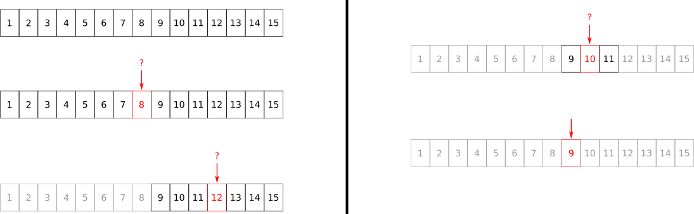
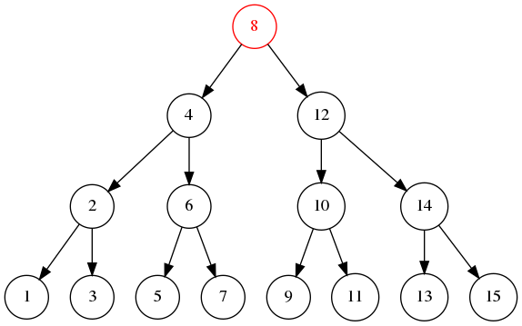
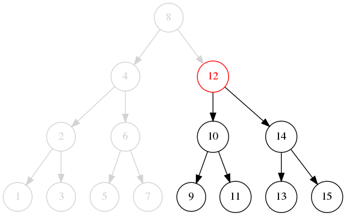
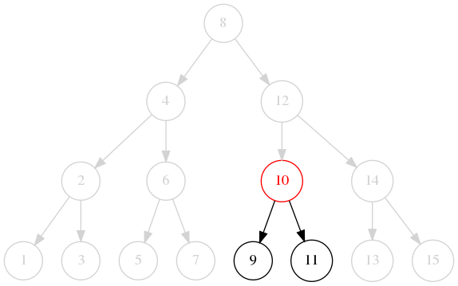
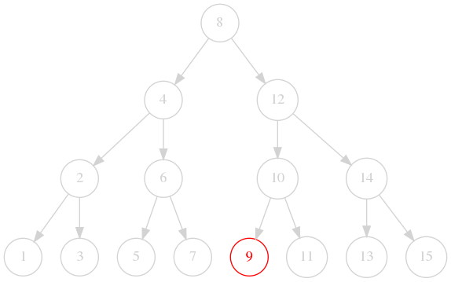
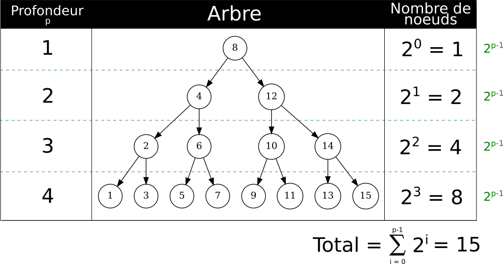
Donc le nombre total maximal de noeuds NNN est relié à la profondeur ppp :
N=∑i=0p−12iN = \sum_{i = 0}^{p - 1} 2^i N=i=0∑p−12i
2p=2p×1=2p×(2−1)=2p+1−2p\begin{align*} 2^p &= 2^p \times 1 \\ &= 2^p \times (2 - 1) \\ &= 2^{p + 1} - 2^{p} \end{align*} 2p=2p×1=2p×(2−1)=2p+1−2p
N=∑i=0p−12i=2p−1+2p−2+⋯+20=(2p−2p−1)+(2p−1−2p−2)+⋯+(22−21)+(21−20)=2p+(−2p−1+2p−1)+⋯+(−21+21)−20=2p−20=2p−1\begin{align*} N = \sum_{i = 0}^{p - 1} 2^i &= 2^{p-1} + 2^{p-2} + \cdots + 2^0 \\ &= (2^{p} - 2^{p-1}) + (2^{p-1} - 2^{p-2}) + \cdots + (2^2 - 2^1) + (2^1 - 2^0) \\ &= 2^{p} + (- 2^{p-1} + 2^{p-1}) + \cdots + (- 2^1 + 2^1) - 2^0 \\ &= 2^{p} - 2^0 \\ &= 2^{p} - 1 \end{align*} N=i=0∑p−12i=2p−1+2p−2+⋯+20=(2p−2p−1)+(2p−1−2p−2)+⋯+(22−21)+(21−20)=2p+(−2p−1+2p−1)+⋯+(−21+21)−20=2p−20=2p−1
2p−1=N2p=N+1log2(2p)=log2(N+1)plog2(2)=log2(N+1)p=log2(N+1)\begin{align*} 2^p - 1 &= N \\ 2^p &= N + 1 \\ \log_2(2^p) &= \log_2(N + 1) \\ p\log_2(2) &= \log_2(N + 1) \\ p &= \log_2(N + 1) \end{align*} 2p−12plog2(2p)plog2(2)p=N=N+1=log2(N+1)=log2(N+1)=log2(N+1)
O(p)=O(log2(N+1))=O(log(N))\begin{align*} O(p) &= O(\log_2(N + 1)) \\ &= O(\log(N)) \end{align*} O(p)=O(log2(N+1))=O(log(N))
On avait vu que la complexité de la recherche binaire était proportionnelle à la profondeur ppp de l'arbre, c'est-à-dire O(p)O(p)O(p) soit O(logN)O(\log N)O(logN).
def recherche_binaire(collection, cle): def recherche_binaire_impl(collection, cle, debut, fin): if fin < debut: return -1 milieu = debut + (fin - debut) // 2 actuel = collection[milieu] if cle < actuel: return recherche_binaire_impl(collection, cle, debut, milieu - 1) elif cle > actuel: return recherche_binaire_impl(collection, cle, milieu + 1, fin) else: return milieu debut = 0 fin = len(collection) - 1 return recherche_binaire_impl(collection, cle, debut, fin)
Lien vers le sujet de TP.
L = [6, 2, 5, 1, 9, 3, 8, 7, 4] L.sort() print(L)
[1, 2, 3, 4, 5, 6, 7, 8, 9]
L1 = [6, 2, 5, 1, 9, 3, 8, 7, 4] L2 = sorted(L1) print(f"L1 = {L1}") print(f"L2 = {L2}")
L1 = [6, 2, 5, 1, 9, 3, 8, 7, 4] L2 = [1, 2, 3, 4, 5, 6, 7, 8, 9]
T = (6, 2, 5, 1, 9, 3, 8, 7, 4) T2 = sorted(T) print(T2)
S = {6, 2, 5, 1, 9, 3, 8, 7, 4} S2 = sorted(S) print(S2)
Ch = "6, 2, 5, 1, 9, 3, 8, 7, 4" Ch2 = sorted(Ch) print(Ch2)
[' ', ' ', ' ', ' ', ' ', ' ', ' ', ' ', ',', ',', ',', ',', ',', ',', ',', ',', '1', '2', '3', '4', '5', '6', '7', '8', '9']
Ch = "6, 2, 5, 1, 9, 3, 8, 7, 4" Ch3 = sorted(Ch.replace(" ", "").replace(",", "")) print(Ch3)
['1', '2', '3', '4', '5', '6', '7', '8', '9']
D = {"un": 1, "deux": 2, "trois": 3} D2 = sorted(D) print(D2)
['deux', 'trois', 'un']
D = {"un": 1, "deux": 2, "trois": 3} D3 = sorted(D.values()) print(D3)
[1, 2, 3]
L = [6, 2, 5, 1, 6, 9, 3, 8, 7, 4] L.sort(reverse=True) print(L)
[9, 8, 7, 6, 6, 5, 4, 3, 2, 1]
L = [(4, 3, 2, 1), [3, 2, 1], "ba"] L.sort(key=len) print(L)
['ba', [3, 2, 1], (4, 3, 2, 1)]
from dataclasses import dataclass @dataclass class paiement: euros: int = 0 centimes: int = 0 L = [paiement(10, 0), paiement(3, 55), paiement(3, 99)] L.sort(key=lambda x: (x.euros, x.centimes)) print(L)
[paiement(euros=3, centimes=55), paiement(euros=3, centimes=99), paiement(euros=10, centimes=0)]
L = [paiement(10, 0), paiement(3, 55), paiement(3, 99)] L.sort(key=lambda x: (x.euros, x.centimes), reverse=True) print(L)
[paiement(euros=10, centimes=0), paiement(euros=3, centimes=99), paiement(euros=3, centimes=55)]
from dataclasses import dataclass @dataclass class outil: nom: str = "" masse: float = 0. L = [outil("marteau", 1.), outil("niveau", 0.5), outil("cutter", 0.3), outil("compas", 0.3)] L.sort(key=lambda x: (-x.masse, x.nom)) print(L)
[outil(nom='marteau', masse=1.0), outil(nom='niveau', masse=0.5), outil(nom='compas', masse=0.3), outil(nom='cutter', masse=0.3)]
sort
sorted
def tri_selection(a): N = len(a) for i in range(N): min = i for j in range(i, N): if a[j] < a[min]: min = j a[i], a[min] = a[min], a[i] return a
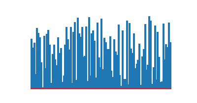
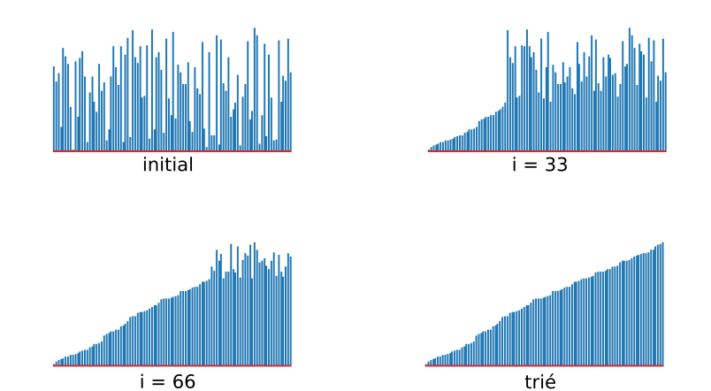
def tri_bulles(a): N = len(a) for i in range(N - 1): for j in range(N - (i + 1)): if a[j] > a[j+1]: a[j], a[j+1] = a[j+1], a[j] return a
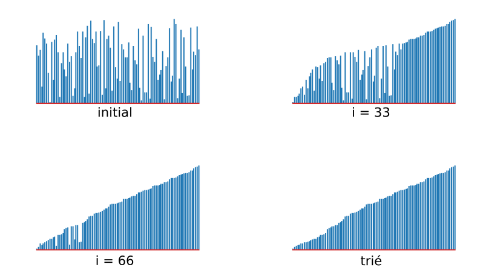
def tri_insertion(a): N = len(a) for i in range(1, N): j = i while j > 0 and a[j] < a[j-1]: a[j], a[j-1] = a[j-1], a[j] j -= 1 return a
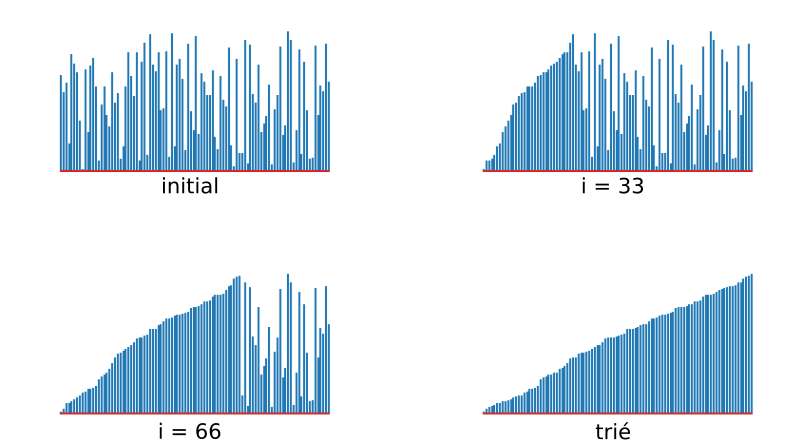
def tri_coquille(a): N = len(a) h = 1 while h < N // 3: h = 3 * h + 1 while h >= 1: for i in range(h, N): j = i while j >= h and a[j] < a[j-h]: a[j], a[j-h] = a[j-h], a[j] j -= h h //= 3 return a
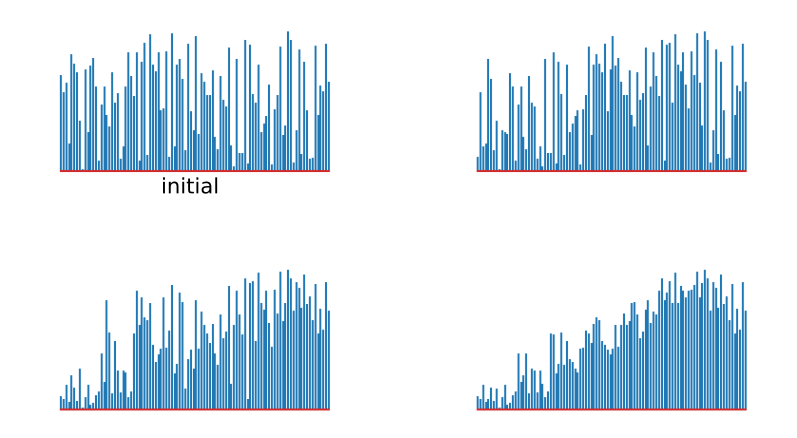
def partition(e): N = len(e) valeur = e[0] i = 0 j = N while True: i += 1 # Garanti la progression à droite while e[i] < valeur and i != N: i += 1 # Scan vers la droite j -= 1 # Garanti la progression à gauche while valeur < e[j] and j != 0: j -= 1 # Scan vers la gauche if i >= j: break # Si les indices se croisent on s'arrête # Echange des éléments entre les 2 partitions e[j], e[i] = e[i], e[j] # Met la valeur de partitionnment entre les 2 partitions e[j], e[0] = e[0], e[j]
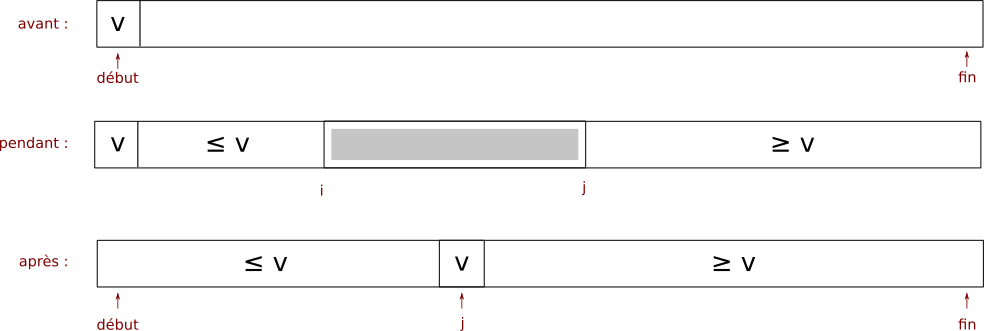
L = [6, 2, 5, 1, 9, 3, 8, 7, 4] partition(L) print(L)
[3, 2, 5, 1, 4, 6, 8, 7, 9]
L = [6, 2, 5, 1, 6, 9, 3, 8, 7, 4] partition(L) print(L)
[3, 2, 5, 1, 4, 6, 9, 8, 7, 6]
def partition(a, debut, fin): i = debut j = fin + 1 valeur = a[debut] while True: i += 1 while a[i] < valeur and i != fin: i += 1 j -= 1 while valeur < a[j] and j != debut: j -= 1 if i >= j: break a[j], a[i] = a[i], a[j] a[j], a[debut] = a[debut], a[j] return j
def tri_rapide_recursif(a, debut, fin): if fin > debut: j = partition(a, debut, fin) tri_rapide_recursif(a, debut, j - 1) tri_rapide_recursif(a, j + 1, fin)
def tri_rapide(a): N = len(a) tri_rapide_recursif(a, 0, N - 1)
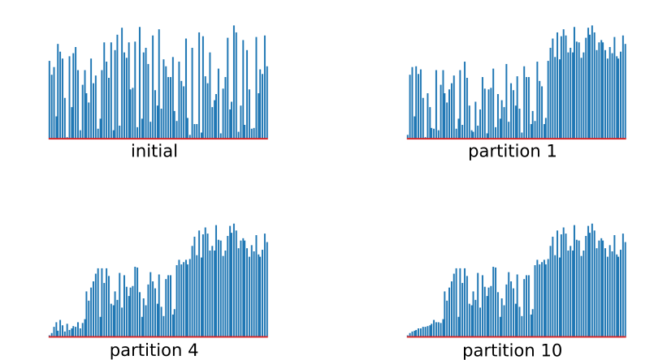
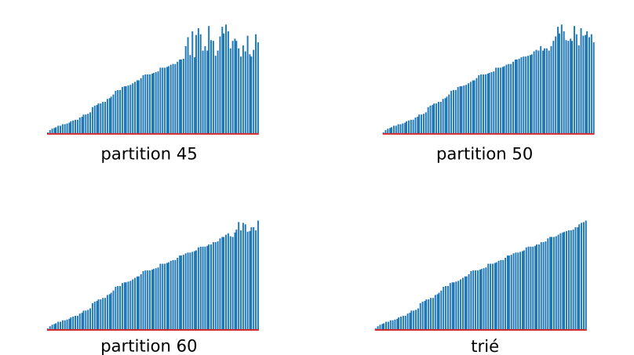
v
def fusion(a, debut, milieu, fin): i = debut j = milieu + 1 auxiliaire = a[:] for k in range(debut, fin + 1): if i > milieu: a[k] = auxiliaire[j] j += 1 elif j > fin: a[k] = auxiliaire[i] i += 1 elif auxiliaire[j] < auxiliaire[i]: a[k] = auxiliaire[j] j += 1 else: a[k] = auxiliaire[i] i += 1
def tri_fusion_recursif(a, debut, fin): if fin > debut: milieu = debut + (fin - debut) // 2 tri_fusion_recursif(a, debut, milieu) tri_fusion_recursif(a, milieu + 1, fin) fusion(a, debut, milieu, fin)
def tri_fusion(a): N = len(a) tri_fusion_recursif(a, 0, N - 1)
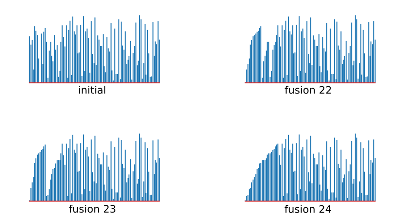
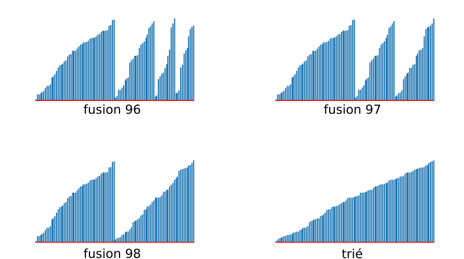